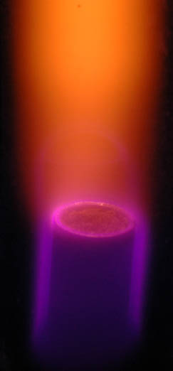

Plasma
Often referred to as the "fourth state of matter", plasma is the state in which some or all of the electrons are removed from the atoms. The interactions between the atoms is dominated by charge interactions between particles that are not electrically neutral.
 |
This is a plasma created by an electrical discharge in a glass tube of nitrogen gas. The state of matter within the discharge region is uncommon on the Earth, but the plasma state is the most common state for the visible matter in the universe. |
|
The plasma state of nitrogen may exhibit some of the colors seen in aurora. |  |
Chemistry concepts
| HyperPhysics | R Nave |